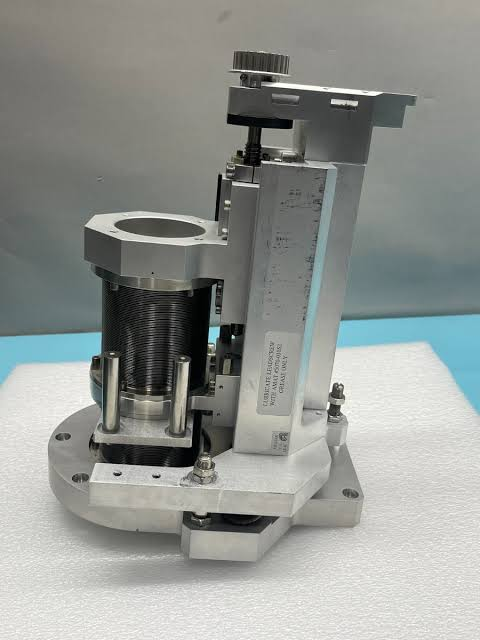

In-depth look at the day-to-day work of a semiconductor fab engineer. Note that these stories are all fiction and should definitely not be taken seriously or as truth. I use Alice and Bob as generic names that reset with every story.
Here's a giant list of vignettes of my career (life!) an equipment and process engineer at a semiconductor fab. It's ordered mostly randomly with the better, more informative stories at the top as a hook. If a story is boring, move onto the next one.
I tried to include a healthy mix of technical, cultural, and political motifs to paint a nice idea of fabs.
Like a good worker bee, I casually check on my phone on Sunday to see if there are emails or phone calls. My heart drops as I read the email send by the yield engineering group alerting us to an issue caused by my equipment that looks eerily similar to the third-worst quality event in factory history. I frantically start making phone calls to contain the potential problem—much better that we stop everything than risk a defective chip making it to the customer. I go to sleep scared for the next day and what it'll bring.
I trudge into the fab to see if I could a) recreate the issue, and b) figure out exactly where it was coming from if it was us, which everyone was pretty certain it was. I'm scared shitless about what I was about to find. If it was bad and easily repeatable, then the extent of the problem (i.e., number of affected wafers) could be way worse than we thought. If it wasn't that bad, then phew! I was possibly in the clear except for the ones I was notified about. Turns out I wasn't in the clear. Not by a loooooong shot. I heard the worst grinding noise known to fab engineers as a component moved up and down. It literally vibrated the floor I was standing on eight feet away and caused me to look at my coworker and nervously chuckle out "haha, that wasn't the equipment, right?" like Ralph Wiggum from The Simpsons. Fuck. Turns out our maintenance procedures were missing a key step and that had caused some bearings to run dry, leading to metal-on-metal contact and extreme vibration while moving up.

I scramble to order all the necessary parts—many of which had to be special ordered and weren't in immediate stock—and get to rebuilding the entire lift assembly, a task literally nobody at the company had ever done before. Guess we gotta be careful and document everything! All the parts arrive a week later and we finish the work about 10 hours after we start it, soaked in sweat, covered in grease, and praying that this fixes the issue. The rebuild fixes it.
But the fun ain't over. I now need to figure how to make sure this shit never, ever, ever happens again, else it's my ass—and maybe employment status—on the line. Here's the order of operations:
And that's it. We didn't have an issue for at least a year after all of this stuff was done.
So why was this the worst three months of my life? A few reasons:
It was about two months into this that I began searching for a new job.
I get pinged by my boss asking me to come into his office to discuss a "great opportunity". How great the opportunity is depends primarily on who's proferring the gig: if your boss is the person asking you, it probably means his boss couldn't find anyone and is voluntelling him to voluntell someone else. If your boss' boss is asking you, it probably means he thinks highly of you and is asking you first or second.
I'm aware of this as I walk into his office. I'm aware of this as he tries to convince me of this "great opportunity" that will "increase my visibility" and "provide cross-functional collaboration" and "improve my problem-solving skills" by being a part of this small team that's being put together to determine the source of some pesky helium leaks. I ask why he's choosing me—an engineer whose equipment doesn't even use helium—over another person in our group whose equipment definitely uses helium. He doesn't have a good answer and I'm not really in a position to say no. I accept.
So now I'm the fab helium liaison and working with the facilities group to come up with a plan. I have no clue how the helium is connected to the equipment. I also have no clue on what our next steps should be. I sit timidly off to the side and let the "adults" do the talking and finger-pointing and hero-ing. We eventually resolve the leak and move on with our lives.
More leaks pop up at sporadic times, enough that I'm annoyed that we have to pull together a task force every time and waste precious manhours hunting this shit with a magnifying glass. Surely there must be a better solution? I grab my facilities counterpart to discuss the plan. (I'll spare the boring details.) We agree on a plan. We execute the plan over the course of a year. Our lives are better as a result.
Despite all of its bureaucratic flaws, the fab was very tolerant of letting people get shit done so long as everyone had bought in. We recognized an issue, figured out how to fix it, and fixed it. Nice!
(This was told second-hand to me, but I will tell it in first person to keep the perspective. I was not involved.)
There are these things called interlocks that make sure certain actions don't happen, like how a driver's foot has to be pressing the brake pedal before putting the car into reverse. Fab equipment has a lot of interlocks to ensure people don't get hurt or die. All fab engineers appreciate these interlocks, even if we curse at them or turn them off temporarily.
I'm working on the equipment with my buddy. We've disabled an interlock using a simple magnet that just rests on a small ledge; otherwise we can't test what we need to test. He's monkeying around inside the tight area that is inconveniently right above a slit valve actuator, a part that uses about 100 psi of compressed air to open and close a door in a linear motion. 100 psi is a bit difficult to put into perspective if you don't have it available to feel, but it's a lot. He's just finished up his checks when I step away to grab a tool, inadvertently knocking the magnet off, resulting in the interlock being enabled, realizing something is wrong, and closing the slit valve door. All of this happened instantaneously about four seconds after my buddy removed his fingers from where they would have been crushed or worse.
We look at each other with a grim "holy shit, did that seriously just happen..?". I apologize profusely and we agree to never bring it up again unless it's anonymous.
In a similar vein, another guy did lose the tip of his finger while lowering a very heavy lid. Ouch! (Again, a secondhand story.)
In another similar vein, a guy once stuck a screwdriver in a hole while fidgeting around waiting for something. He did not realize there was a lot of electricity on the other end. Thank goodness the screwdriver had an insulated handle! (Again2, a secondhand story.)
Fab equipment is designed to fit in a very tight footprint to maximize tools per area. Because of this, lots of parts have to be jam-packed in in very small areas. This is especially bad on older equipment that hasn't gotten a lot of design improvement/innovation or customer feedback. How are these parts installed to begin with? Generally from the inside to the outisde, i.e., the parts towards the middle of the equipment are installed first, then they work towards the outside, meaning sometimes you have to uninstall many parts just to access the one you want. Fun! But that's not the way we roll.
Revealed preferences show that we'd rather spend two hours trying to directly get at the part in question than one hour removing everything else. Work harder, not smarter!
I start. About 15 minutes later my hands hurt and my mouth has let off about 20 expletives that would've gotten me fired had the wrong person heard. A's turn next. He lasts longer—a monstrous 30 minutes—and manages to make some progress in removing it before calling it quits because of the awkward body and hand positions required. B's turn next. No dice. C also fails. We are out of internal options and have to start calling other groups to see if they can help us.
That's when D comes over like a gift from the fab gods. D is short, skinny, and has wrist flexibility that'll make a handbalancer jealous. We pointed to the valve, he commented "gah dayuuuuuum that's a pesky one", then proceeded to remove it in about two minutes using some contortion techniques that he must've learned in a past life as a circus worker. We stared in disbelief and frustration. "We're calling him first next time" I say to the group.
Some equipment requires a buttload of power, my equipment being one of them. My combined fleet was the number one power hog in the entire fab. And yes, this was a badge I wore proudly...or should I say...powerdly.
With buttloads of power comes buttloads of cables to carry said power. And not just regular ol' 18 gauge wire. I'm talking thicccccc copper wires the width of a thick thumb (well, made up of a bunch of smaller strands, but the final wire was thumb-sized). And there were three of these thumb-sized cables within a single main cable. And each main cable was like 500 feet long! Now for those that don't appreciate how heavy this is, we can do some simple math to figure out the weight:
weight = π × 1.272 cm2 × 15240 cm long × 8.96 g/cm3 ÷ 454 g/lb = 1200 lb (545 kg)
These cables from from an electrical substation on the perimeter of the fab to transformers in the interior of the fab, thus the 500-foot length. But keep in mind this fab has been open for quite a while, so there isn't a straight shot from a substation to transformer. Instead, the cable has to snake up and down and left and right and diagonal and up some more and left again before it finally reaches the transformers. And all of this routing takes place about 20 feet above the ground in the pipespace.
So I go down to where they're pulling the cables to see what the process is like. Keep in mind that I've never actually seen this before; to us fab engineers, there are basically cable fairies that magically create the cables exactly where they need to go overnight. I'm greeted by 19 burly men who are heaving and routing this massive cable through the pipespace. They have five guys harnessed in up in the pipespace, nine guys helping to lift the source of the cable up into the pipespace, four guys on the far side pulling it through, and one guy making sure their lifts are all synced up with a "one, two, pull!" I ask why they don't use, ya know, a motor to help with this and they reply that sometimes it puts the wrong force on things and can be difficult to stop in time.
It was at this point that I truly appreciated my semi-desk job that didn't involve repeatedly lifting heavy-ass objects for hours a day.
Also, apparently there was a 70-person (seventy, yes, you read that right) cable pull at a sister fab. I would've loved to see that.
It's the day before the 5S audit. 5S is a Japanese principle that improves workplace efficiency: shine, set, sort, standardize, sustain, shine. Kinda like the 5 Ds of dodgeball. Anyway, our part storage areas are expected to meet the company's self-imposed 5S standard. But this time was different. This time a company auditor was coming to make sure things that were over a certain dollar value were where the storage system said they were. Why, I do not know. So what did we do? Surely we had already spent an hour a day starting a few weeks in advance organizing the system, adding serial numbers and part ID numbers and moving things to the correct shelves and so on, right?
Wrong. We blitzed the hell out of the process, spending hours documenting everything, updating numbers and locations and information until our barcodes were imprinted in our vision. In the end, they didn't even end up coming. But hey, at least our stuff is organized now.
I finally found the issue we'd been chasing for three days, two of which were Saturday and Sunday: a fucking fuse burnt out. I go up into the fab to search for this style of fuse, but come up empty-handed after asking everyone I know and even calling their mothers. No fuse.
But hope was not yet lost! An industrial supply store in the area had them in stock. All I had to do was either a) order them and wait until tomorrow afternoon to get them, or b) drive over there and buy them with the company card. I chose the latter just to get it over with. At least I could listen to some podcasts on the drive and not have to be pestered tonight about the equipment still being down.
So I get there and realize "hmm, maybe I should ask if I can use the company card for this. After all, it's only supposed to be used for recruiting." So I call my boss and he's also unsure, so he calls his boss who's also unsure! Shit. They're desperate at this point so they tell me to just buy it and they'll reimburse me somehow.
And that's the time I made my corporation-hating peers ashamed by paying for parts out of my own pocket. I didn't get reimbursed because it felt weird asking. Instead I just took off 30 minutes early that day.
Equipment suppliers will offer at-the-customer-site training classes for their equipment. This allows the fab's technicians and engineers to learn about the equipment, ask the experienced trainer questions, and get documentation that they can use for the future. It's also a chance for the attendees to goof off for the week while getting paid, depending on who the instructor is and who the attendees are. Most instructors I've been with are chill and want to have a good time; most attendees are techs, who in general also want to have a good time. This is a dangerous combination when the people who put them there want results!
That is why you embed an engineer in there: for learning and enforcement of learning.
The class is a week long, split into a few days of theory in the classroom and practical, hands-on work in the fab. Unsurprisingly, I'm pretty much the only one asking questions out of the group—everyone else is either sleeping because they're from night shift and this is messing up their sleeping schedule or don't really care that much.
[finish]My work best friend, A, and I sat at opposite corners off the office. Probably about 70 feet apart. We got tired of messaging each other or yelling across the office, so what better way to communicate than to yell "ring! ring!" and have the other pick up their side of the cup phone?
So I bought some yarn that the internet told me was the best cup phone yarn available and trespassed in other people's cubes while A held it at his end. We terminated each line using a community coffee cup and paper clip and tested it.
By golly, it worked! Not very well, of course, but that's to be expected. We could still hear each other and mostly make out words if the line was taught and the rest of the office was fairly quiet. It was amazing for about 10 minutes and then we used it like once a quarter as a gimmick or to show new people.
Those were good times. We also had a plan to create a complete network between all the cubes that never materialized. Those were sad times.
The alarm came in and told us the chiller—a part that circulates a certain type of coolant—had low flow. This generally means there's a clog somewhere in the system that may just be bacteria growth that's gotten to a certain point. This was the day I became a plumber.
There are a fuckton of types (shapes) of fittings. These are parts that piece together to form pipe connections. There are also a fuckton of different styles (e.g., metric vs. standard) of fittings that aren't compatible with each other without an adapter, i.e., one side is style X and the other side is style Y. This is generally not glaringly obvious unless you've worked with this stuff before, so it often just feels like it doesn't fit and you have the wrong size. Something something about unknown unknowns...
So me and coworker go down there and start trying to figure this out. Neither of us have this type of plumbing experience nor have we worked with the chiller much. The key here is process of elimination. The best way to determine where the clog is is to methodically isolate/remove certain parts of the coolant loop and see if the flow goes back to normal. And so we begin. This involves looking at schematics and understanding the flow diagram and then building new connections with fittings and oh did I mention there's also male and female types and that removing loops can require also having to change genders? And voila, we eventually find the clog, located in a quick disconnect fitting right at the chiller. We swap, we test, we good. Time to go home. But on the way out we get a call from a technician: it didn't work. The chiller is showing low flow. It's 6pm and we're tired and want to go home.
So I do what every engineer at 6pm wants to do but doesn't always have the courage to do: I tell the technician on the incoming shift (techs work Xpm to Xam or Xam to Xpm, where X varies by company and fab) to do whatever he needs to to resolve the issue. I go home, sleep soundly, and wake up dreading the issue is still there.
It's not. I'm scared to know what he did (sometimes you actually don't want to know what they did, just that it works in the end—don't ask!), so I gingerly ask. He swapped the connections to reverse the flow of coolant. That was it. So this mysterious object inside the pipes that was causing the clog went from moving in a clockwise direction through the equipment to a counterclockwise direction. No pulling out a hairball or greaseball or piece of glove or anything like that. Just throw a bandaid on it and that's that.
Onward to the next issue.
One piece of fab equipment uses lamps to heat the wafer by shining light really bright to produce heat. This process can get really hot, easily upwards of 1000 °C. That's, like, melt your face off and definitely not open casket funeral hot. That's you want a bunch of interlocks to prevent you from experiencing that hot. That's don't fuck around unless you know what you're doing and there's no ESH around hot.
So we're troubleshooting this issue and are getting absolutely nowhere. Everyone in my group has exhausted their ideas, so we call in another guy from another factory to help. I'm very wary about this. Let's say that there's some equipment alarm that has multiple potential causes, but the alarm doesn't provide any extra info, like a check engine light going on but there's no extra info. So you just gotta check the engine as a whole? Or replace the entire thing outright? Of course not. You start troubleshooting. But where do you even start? Fab engineers start by either a) reviewing equipment signals (temperature, pressure, flow, speed, etc) and seeing if anything anomalous stands out, or b) reviewing past resolved events and then matching any patterns to the existing event to see if the previous solution can be replicated. And like many things in the world, equipment alarm root causes are often Pareto-distributed, so some new tech wannabe-hotshot can solve the same alarm by just spamming the common solution button a bunch of times, but when the not-20% alarm comes around, he's useless.
That was this guy's problem. Our alarm was something he had decent experience with, but he wasn't listening to me when I told him all of the checks we had done and were confident with, which, to be fair, is fair on his part because you should double-check others' work to definitively rule out that issue and to make sure they were doing thigns correctly, but what he wanted to check didn't even make sense! But I also don't wanna anger the guy who's graciously come to help us, so I shut my mouth and oblige his requests.
Except his main request involves risking burning my face off and not having an open casket funeral. He wants to open the equipment up so we can observe all of the lamps and make sure they're operating properly. Normally the software tells us this reliably, but that just checks some electrical signals which can be occasionally faulty. The surefire, foolproof way is to visually observe the lamps turning on by manually adjusting the power by hand. Oooooooh sheeit.
The process of overriding the interlocks is fairly straightforward, if not a bit cumbersome: all we have to do is apply clamps to two sensors to trick the equipment into thinking the lid is closed and it's safe to turn on the lamps. Done.
Next is powering on the lamps manually through the equipment's GUI. One person will be at the computer entering the numbers and the other(s) will be watching the lamps themselves. We follow my standard procedure of me saying the number, the enterer repeating the number for confirmation, and me confirming. I give a gingerly 10% command to ensure the lamps get bright enough. Here it comes. A miniature sun is being created within the fab as the lamps quickly ramp to their 10% setpoint, a bright beacon of troubleshooting and unsafety attracting all that may be walking by, a symbol of distrust in electrical signals and belief in visual verifications. We repeat this process zone-by-zone (the 100s of lamps are divided into some number of individual zones, each of which contain a varying number of lamps). I think we're finished before the guy hits me with an even crazier request: he wants to turn on every lamp at once just to make sure we didn't miss anything. "Um, what is it that we just did if not that, just in a much more controlled, safe manner?" He mumbles some bullshit that doesn't make sense but remains steadfast in his determination to melt our faces off. One zone on at 10% doesn't produce that much heat, but that's only like 7% of the total number of lamps. What happens when we multiply that by 10? I don't even wanna think about it. I slyly tell the enterer that once he confirms the 10% number on the screen he should immediately enter 0% and confirm that, too—the ramp up should take enough time that we can see the lamps hit 10% before going back to a safe 0%. No way I'm taking any chances on this or my money maker (my face). I look down the hallway to see if anyone's coming before whimpering out a "10% for all zones".
I can see the light coming quickly, like an accelerated sunrise that has no actual movement, just a change in brightness. I feel as though Smaug has shot his flames from the depths of the fab and they're entering the cleanroom here, feet away from me, through my equipment. The color is a deep red, well below the intensity of the 1000 °C processes but still frightening when I think about what it represents: massive amounts of electricity, insane amounts of heat, and a one-way ticket to the unemployment line. (I'm mostly joking here. Overriding interlocks is actually a fairly normal part of the job, but must be done with some serious precautions and everyone knowing what they're doing.)
The red quickly subsides to nothing as 0% is reached. I'm floored at the outcome: every single lamp turned on, just like in the individual zone tests! Woah! That's crazy! Who would've predicted that! The guy shrugs his shoulders, says "well, don't really know what else to check", and proceeds to leave for lunch before never coming back.
Equipment suppliers are responsible for working with the customer (the fab) to install the equipment and verify it's working properly (also called "qualifying" it) before releasing it to the customer for them to start using it in production. The suppliers often match the skill level of the installers with the importance of the customer, unless the installer population is tight, in which case they'll send whoever is available.
Problems arise when edge cases are met: the equipment is esoteric and not popular and the installer isn't familiar with it. This often leads to extreme inexperience and inability to make tweaks on the fly.
I've been working to qualify a chamber for a few months now alongside the supplier's process engineer. They're making wild adjustments to the process in an effort to get it right but it just isn't responding. Eventually I go upstairs and see exactly what their "process" is: they're messaging their more experienced colleague with the results and he's copy-and-pasting them into their proprietary AI process software then sending the adjustments needed back. How scientific of them!
I'm extremely annoyed. It's been almost two months past when this should have been completed and is sucking up a good portion of my week. So I go nuclear: I email their boss and boss' boss in a polite manner and basically ask them "what the hell is going on?". They give me some corposlop back while acknowledging that yes, it's longer than expected and they're also annoyed, but they're gonna send out the expert. My ears perk up—the person they're sending out is definitely the bona fide expert.
A few days later me and the expert, Bob, are standing in front of the problem chamber staring at the damage that has been done to the inside. He knows it's bad. I know it's bad. We both know his company will not directly admit to it being bad for challenging us. Why? The damaged part is $120,000. Despite how expensive fabs and their equipment are, this is still a large spend that will invite scrutiny. Whose fault was it? Is there another way to fix this? I quickly realize that Bob will be tasked by his managers to find a way to put the blame on us, so I begin documenting all of the issues that caused this and send an email out.
I have them dead to rights. They know it and I know it. They make one last-ditch effort to replace another part in hopes that it fixes it. It doesn't. We get a $120,000 part and it magically works immediately after replacing it.
Some factories have one-of-a-kind equipment, colloquially known as OAKs and sometimes "that fucking equipment". OAKs may exist for a few reasons. First, the volume of product that runs through it is so low that the costs do not justify purchasing another one. Let's say my fab runs the product NMP4 at a rate of 25 wafers per week (1 lot per week) and it takes one hour to process those wafers on the OAK equipment. That means the equipment doesn't do anything for the remaining 167 hours of that week. Who in their right mind would get another one and take up the valuable fab floorspace when you can buy more equipment for a very constrained process? Second, the company is tight with their money and is okay incurring the risk of that OAK equipment going down and stopping the manufacturing line until it gets fixed. There are various considerations around this, such as how supported the equipment is by the vendor or second-source suppliers; its general performance and how often its parts fail, etc; are there other OAK parts on the tool (remember kids, an equipment's OAKiness is determined by its weakest link, which are often parts, i.e., OAK equipment may have OAK parts, and those OAK parts may no longer be sold!); how critical the process is to the success of the product; how critical the products are that run through the equipment; how good the equipment and process engineers and technicians are at maintaining and operating the equipment (this is way less a considerating because "engineers should just get better", but some equipment is incredibly esoteric and the old guard may be on their way to retirement or already there).
OAK equipment sucks. If you're the equipment or process engineer and it's not working properly, you will hear about it. And if you don't hear about it, it's because you're either hiding from your phone or you don't have signal. You will get called. And you will keep getting called until it's fixed. You will need to write plans and give status updates and communicate with the technicians who are working on it and read up on documentation to make sure you fully understand the issue. It's not a small deal to own an OAK, and managers will often assign more senior engineers to the higher priority OAKs, or at least have an off-to-the-side convo with a senior engineer about them helping the junior engineer if they own it.
And so it was a night in July and all was quiet throughout the fab, not one of my tools had issues, not even an overhead transport fault. Until my OAK starting acting up. The signals told me nothing. Going inside the fab and watching it told me nothing because it would never error when I was there, only when I walked away. I was stuck but had to move because, well, OAK!
I went home, exercised, ate dinner, then sat down to pore over everything. Signals. Maintenance logs and comments by technicians. Commonalities between the faults and the wafers. Everything I could think of that would give me information was inspected until the early morning hours. I finished around 3:00am, looked at the time, thought about if three hours of sleep would be worth it, decided no, took 100 mg of caffeine, and headed back to work.
The first thing my boss says when he sees me around 8:00am is "wow, it looks like you stayed up all night" to which I reply "yeah, because I did". He gives a nervous chuckle and asks me how the equipment is doing instead of checking on my well-being.
finishMy fab is a big fan of blitzing. A blitz is when big groups of people—be it a single team, a type of engineers, fab group champions, or experts on a certain subject—sit in a room together and brainstorm ideas based on the blitz's subject. For example, in a cost blitz, an entire team (i.e., my boss and his direct reports) may sit in a room for an hour and come up with ideas that will save the company money. After the blitz, we enter these ideas in a database to show everyone that we're doing stuff. After doing that, we go back to whatever it was we were doing before. I can recall about one blitz that was worthwhile; everything else did nothing except lower morale and waste an hour of our lives.
My company's fabs—especially the older ones—are raunchy, raucous, rough places. They're filled with old school guys, many of whom served in the military or in some sort of trade, who embody the stereotype of "fuck your feelings", but are also super cool and kind and helpful and care for you. It's a weird dichotomy.
The jokes and other weird, crazy, unhinged shit you hear in the hallways is often enough to turn your head. I'll spare the reader the specifics of the jokes, but imagine a middle school boys' locker room but with way more experience and way more frustrated guys. The dialogue in Full Metal Jacket (1987) may give a nice glimpse into fab speak.
If you are a thin-skinned man, then the fab is probably not a great place for you. Women of all skin thicknesses are welcome and respected when it comes to jokes, i.e., no jokes will be told while you're around.
Many fabs have service contracts with the equipment manufacturers. They pay some amount of money per time and the equipment manufacturer either has dedicated guys on-site or will send them out at a moment's notice or something in between. This is on an equipment-by-equipment basis, so a fab may have an ASML contract, but not an AMAT or TEL contract.
For the average, unlucky engineer who doesn't have a service contract, you're basically on your own. I am the last person in line. The buck stops with me. I can attempt to get some ad-hoc service by cutting the OEM a check, but there's no guarantee the guy they send is any better than me or that they'll even send anyone at all. I constantly feel alone and scared. Sure, we have technicians and they are freaking awesome and knowledgable, but no one knows everything and there's always that lingering dread of some problem arising that no one will be able to figure out, that's so deep into the equipment that fixing it would require tens of man hours and extreme disruption and a major risk of something not being put back together properly. That said, there's some solace that all of my equipment was still operational despite it being very old—there were many issues over the years that someone ended up figuring out, and if they could do it, then so can I.
Fab equipment has a lot of detail which gets much clearer the longer you work on them, especially when it's unsupported and sink-or-swim. Modesty aside, my colleague and I are probably ranked as top 50-100 experts worldwide on the equipment we were responsible for based on this calculation:
(fabs × people/fab × alumni multiplier × fraction who are last line + OEM/third-party pool × their last-line fraction) × fraction with ≥ your tenure × fraction deep on all three × fraction who actually root-cause
Talk about cool! And scary! There's not just some internet forum where I can post about a question and have some random guy come out of the woodworks to give me an answer that is perfect for me. (I've actually thought about creating a forum like that, but I doubt the companies would like that and employees would probably be too scared to post on it.)
I'm the expert. I'm the guy they call for help. There isn't anybody that I can call. I'm the expert.
Now imagine that for super old equipment where the people who did work on it are either retired or dead. Suddenly my situation doesn't seem so bad...
Fab equipment has many families, or toolsets, that each have as many individual, identical pieces of equipment (colloquially called "tools" or, more technically, workstations) as necessary to produce the desired amount of wafers. For example, a regular ol' fab may have a DUV 248 nm photolithography toolset with six individual DUV machines called scanners. Other toolsets may have anywhere between one and a lot (20-100+) of machines, depending on the process it runs and the size of the fab.
Standardizing settings between each tool is extremely important for a few reasons. First, it makes troubleshooting a whole hell of a lot easier. If all tools have different settings and tool1 is having an issue, it's very difficult to discern whether that issue is being caused by a setting or something else. Second, it makes it more likely that the output of each tool is the same so that it doesn't matter which wafers go where—this maximizes flexibility in case some numbers of tools aren't working. We don't want a single Goldilocks tool, we want all Goldilocks tools! Third, it makes updates much easier. Testing a new setting value on one tool allows me to apply that new value to other tools if and only if all the others tools match, otherwise there may be some unintended side effect on the mismatched tool.
Cue storytime. It's my first few weeks on a new toolset and I'm starting to dig into equipment settings to learn more about how the tool operates. After a while I start to notice some small discrepancies here and there, with some tools being set to the default and others not. I ask a few people why these were changed and get a single response about a single setting: "Oh, I changed that because it wasn't working. I forgot to set it back."
My worst fear has been realized. What else hasn't been set back? How long have the others been set like that? Why wasn't it working? Is the reason why it wasn't working still there? Are all of these on-the-fly changes documented somewhere, anywhere? Is it as simple as reverting to the default? Or were other settings changed to compensate for that one and now there's some compounding effect? The tool instantly turned into a house of cards in my mind, stainless steel into paper, aluminum into fragile glass, a complex process relying on specific values like computer code relies on semicolons at the end of a line.
What do I do now? Do I progressively change everything back and monitor? Do I tell people about it? What if I tell them and they make me go to change control board, a lengthy, months-long bureaucratic process that is much more trouble than it's worth? Oh, god. I decide to sit tight to get a better grasp on what these settings are actually doing and how critical they are. The tool is operating just fine now and I don't need to break anything.
In the meantime, I start locking everything down. I'm able to configure settings such that pretty much only I can change them, and when they are changed, I'll be notified so I can kindly explain to the person who tried to change them to STOP CHANGING THEM AS THEY SEE FIT.
I ended up locking down about 700 critical settings for each tool after getting them all to match.
The rumors were spreading that Bob was getting fired. What for, I ask. He overrode an interlock and got hurt, they reply. Yeah, that'll do it. Turns out Bob overrode a robot interlock but was a dumbass about it, choosing to get into the robots path and not realizing that it was going to turn. This particular robot was heavy, fast, and not about to let a human head—or in this case, teeth and cheek—stop it from doing what it was told to do. Bob got whacked in the face and apparently chipped a few teeth and broke some bones in his face. He was fired within a few minutes of reporting the event.
Remember kids: never override an interlock unless you know what you're doing! And if you get hurt and report it, you will get fired!
Deposition tools add a layer of material to the surface of a wafer. This may be metal like Cu, an oxide like SiO2, or something hybrid. Regardless of the type, effectively every deposition process wants uniform thickness across the wafer, i.e., an average that's on target and low range (maximum minus minimum as close to zero as possible).
Thus, when an engineer sees a thickness profile that has a minimum value that's 50% of the maximum, they may freak out a little (lotta) bit. Then, when they dig into what caused that and find nothing out of the ordinary, they will definitely freak out! Which is exactly what happened to me. One of my pieces of equipment ran a test and it came back with massive range and a very distinct pattern that we have never experienced before. We had no idea how many production wafers had been compromised, i.e., how long this issue had been going on.
FINISH
Designed the customer acceptance criteria for new equipment. Myself and two other engineers sat down and laid out all of the tests that the new equipment would have to both run and pass in order for my company to sign off on it being acceptable. This can involve quite a bit of back and forth! What we think is reasonable isn't always reasonable in the eyes of the supplier (also called the vendor or original equipment manufacturer (OEM)). I think we had six rounds of revisions before we finally agreed on the terms and conditions.
The exit interviews about lined up with what I expected, although I was surprised that they were surprised at my grievances.